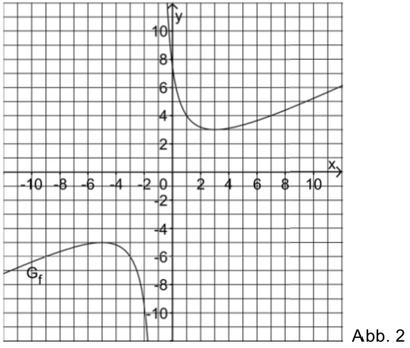
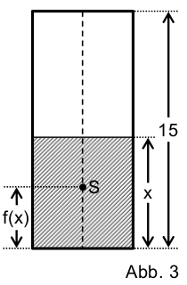

Asymptotes¶
Introduction
We are given the function \(f:x\mapsto \frac{1}{2}x -\frac{1}{2} + \frac{8}{x+1}\) with domain \(\mathbb{R} \backslash \{-1\}\). Figure 2 displays the graph \(G_f\) of \(f\).
Problem 1¶
Problem 1
State the equations of the asymptotes of \(G_f\) and demonstrate by means of a calculation that \(G_f\) does not intersect its inclined asymptote. Add a sketch of the asymptotes to figure 2.
Calculate the position and nature of the extrema of \(G_f\).
Solution of part a
At \(x=-1\) the function \(f(x)\) possesses a pole. Accordingly, the first asymptote is described by the equation \(x=-1\). The second asymptote ist obtained by considering \(f(x)\) for very large absolute values of \(x\). In this case, the term \(\frac{8}{x+1}\) goes to zero. Therefore, the function approaches the straight line \(g(x) = \frac{1}{2}x -\frac{1}{2}\).
The following code asks Sage to identify the poles of the function which are then displayed by grey dashed lines. In this way, the vertical asymptote \(x=-1\) is accounted for. In addition, the asymptote for large values of \(\vert x\vert\) must be depicted.
An intersection of the function with its asymptote can only exist provided that
possesses a solution. However, this is obviously not the case. Accordingly, Sage does not find an intersection.
Solution of part b
In order to determine the positions of the extrema, the derivative of \(f\) must be set equal to zero. The nature of the extrema can be deduced from the sign of the second derivatives at these points.
We find by taking the derivative:
The first derivative vanishes at \(x+1 = \pm 4\), i.e., at \(x_1=-5\) and \(x_2=3\). In the first case, the second derivative is negative and we have a maximum. In contrast, in the second case the second derivative is positive and we have a minimum.
These results may be confirmed by Sage.
Problem 2¶
Problem 2
Figure 2 suggests that \(G_f\) is symmetric with respect to the intersection \(P(-1\vert -1)\) of its asymptotes. In order to prove this symmetry of \(G_f\), one may consider the function \(g\) the graph of which is obtained from \(G_f\) by a shift in the positive \(x\) direction by \(1\) and in the positive \(y\) direction by \(1\).
Determine the function term of \(g\). Then demonstrate the point symmetry of \(G_f\) by proving that the graph of \(g\) is point-symmetric with respect to the origin.
(Partial result: \(g(x)=\frac{1}{2}x+\frac{8}{x}\))
Demonstrate that \(\int\limits_0^4 f(x)\mathrm{d}x=2+8\cdot\ln 5\). Then determine without any further integration the value of the integral \(\int\limits_{-6}^{-2} f(x) \mathrm{d}x\); illustrate your procedure by appropriate additions to figure 2.
Solution of part a
A positive shift in \(x\) direction by \(1\) is obtained by replacing \(x\) by \(x-1\). Adding \(1\) leads to the required shift in the \(y\) direction. The function \(g\) is then obtained in agreement with the partial result stated in the problem text:
The point symmetry of \(g\) with respect to the origin is a consequence of the presence of only linear or inversely linear terms. It can be demonstrated by means of Sage as follows:
Solution of part b
The antiderivative of the function \(f\) is
Inserting the limits of integration, one finds the stated result
By means of Sage, one obtains accordingly:
As a consequence of the point symmetry \(g(-x)=-g(x)\) and the relation \(g(x)=f(x-1)+1\) it follows that
The second integral to be evaluated can then be determined as follows:
Here, we first took the mirror image of the interval of integration and then shifted it.
The resulting value can be confirmed by Sage:
The procedure can be displayed graphically by Sage. The area of size \(2\cdot4=8\) displayed in red represents the correction to the integral following from the point symmetry with respect to \(y=-1\).
Problem 3¶
Problem 3
A vertically standing beverage can is of the form of a straight cylinder. The position of the joint center of mass \(S\) of the can and the liquid contained in it depends on the filling height of the liquid above the bottom of the can. For a completely filled can, the filling height amounts to 15 cm.
The function \(f\) considered so far, yields for \(0\leq x \leq 15\) the height of \(S\) in centimetres with respect to the bottom of the can. Here, \(x\) is the filling height in centimetres (cf. figure 3).
Determine \(f(0)\) und \(f(15)\). Interprete the two results within the context.
The initially empty can is slowly filled with a liquid until the maximal filling height of 15 cm is reached. Use figure 2 to describe the motion of the center of mass \(S\) during the filling process. Within the context, explain the meaning of the fact that the coordinates \(x\) and \(y\) of the minimum of \(G_f\) agree.
For which filling heights \(x\) is the center of mass \(S\) situated at a height of at most 5 cm? First answer this question approximately with the help of figure 2 and then by means of a calculation.
Solution of part a
Inserting the given arguments into the function \(f\), we find
For a completely empty can (\(x=0\)) the center of mass \(S\) agrees with the center of mass of the can. For a homogeneous distribution of weight, \(S\) is thus situated in the midpoint of the can at a height of \(7.5\,\mathrm{cm}\). If the can is completely filled, the center of mass of the liquid corresponds to the center of mass of the empty can. Therefore, the joint center of mass agrees with the center of mass of the empty can.
Solution of part b
Filling the empty can with the liquid, the center of mass is first lowered. At a filling height of \(3\,\mathrm{cm}\) the surface reaches the center of mass. Beyond this filling height, the center of mass rises again.
Solution of part c
From figure 2 we can estimate the region in which the center of mass is below 5 cm to \(0.5 < x < 9.5\). The exact limits for \(x\) are obtained by solving the equation
for \(x\).
By means of Sage, we can calculate the exact values:
The same result
is obtained by solving the quadratic equation obtained from the above equation